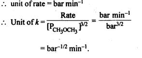

NCERT Solutions For Class 12 Chemistry Chapter 4 Chemical Kinetics
Topics and Subtopics in NCERT Solutions for Class 12 Chemistry Chapter 4 Chemical Kinetics:
| Section Name | Topic Name |
| 4 | Chemical Kinetics |
| 4.1 | Rate of a Chemical Reaction |
| 4.2 | Factors Influencing Rate of a Reaction |
| 4.3 | Integrated Rate Equations |
| 4.4 | Pseudo First Order Reaction |
| 4.5 | Temperature Dependence of the Rate of a Reaction |
| 4.6 | Collision Theory of Chemical Reactions |
NCERT TEXTBOOK QUESTIONS SOLVED
4.1.For the reaction R—>P, the concentration of reactant changes from 0.03 M to 0.02 M in 25 minutes. Calculate the average rate of reaction using units of time both in minutes and seconds.
Ans.
4.2.In a reaction, 2A —-> Products, the concentration of A decreases from 0.5 mol L-1 to 0.4 molL-1 in 10 minutes. Calculate the rate during this interval?
Ans.

4.3. For a reaction, A + B → Products, the rate law is given by : r = k [A]1/2[B]2. What is the order of reaction?
Ans. Rate law(r) = k [A]1/2[B]2
order of reaction = \(\frac { 1 }{ 2 } +2=2\frac { 1 }{ 2 } \quad or\quad 2.5\)
4.4.The conversion of molecules X to Y follows second order kinetics. If concentration of X is increased to three times how will it affect the rate of formation of Y ?
Ans.The reaction is : X—>Y
According to rate law,
rate = k[X]2
If [X] is increased to 3 times, then the new rate is
rate’ = k[3X]2
rate’ = 9 k [X]2 = 9 rate
Thus, rate of reaction becomes 9 times and hence rate of formation of Y increases 9-times.
4.5. A first order reaction has a rate constant 1.15 x 10-3 s-1. How long will 5 g of this reactant take to reduce to 3 g?
Ans.
4.6.Time required to decompose SO2Cl2 to half of its initial amount is 60 minutes. If the decomposition is a first order reaction, calculate the rate constant of the reaction.
Ans. For 1st order reaction,

4.7. What will be the effect of temperature on rate constant?
Ans. In general, the rate constant for a reaction nearly becomes double with about 10° rise in temperature because of the fact that the effective collisions become almost double. The exact dependence of the reaction rate on temperature is given by Arrhenius equation; \(k=A{ e }^{ -{ E }_{ a }/Rt }\).
Where A is the Arrhenius factor or the frequency factor. It is also called pre exponential factor. It is a constant specific to a particular reaction. R is gas constant and Ea is activation energy measured in joules/mole (J mol-1).
4.8.The rate of the chemical reaction doubles for and increase of 10 K in absolute temperature from 298 K. Calculate Ea.
Ans.
4.9.The activation energy for the reaction, 2 HI(g) —-> H2+I2 (g) is 209.5 k J mol-1 at 581 K.Calculate the fraction of molecules of reactants having energy equal to or greater than activation energy?
Ans.Fraction of molecules having energy equal to or greater than activation energy is given by:
NCERT EXERCISES
4.1. From the rate expression for the following reactions determine their order of reaction and the dimensions of the rate constants:
Sol:
4.2. For the reaction ; 2A + B → A2B, the reaction rate = k [A][B]2 with k = 2·0 x 10-6 mol-2 L2 s-1. Calculate the initial rate of the reaction when [A] = 0·1 mol L-1; [B] = 0·2 mol L-1. Also calculate the reaction rate when [A] is reduced to 0·06 mol L-1.
Sol:
4.3. The decomposition of NH3 on platinum surface is zero order reaction. What are the rates of production of N2 and H2 if Ar=2.5 x 10-4 mol-1 Ls-1.
Sol:
4.4. The decomposition of dimethyl ether leads to the formation of CH4, H2 and CO and die reaction, rate is given by Rate=k [CH3OCH3]3/2 The rate of reaction is followed by increase in pressure in a closed vessel, so the rate can also, be expressed in terms of the partial pressure of dimethyl ether, i.e., Rate= k (PCH3OCH3)3/2
If the pressure is measured in bar and time in minutes, then what are the units of rate and rate constants?
Sol: As the concentration in the rate law equation is given in terms of pressure,

4.5. Mention the factors which affect the rate of a chemical reaction.
Sol: The rates of chemical reactions are influenced by a number of factors. These are :
(i) Concentration of reactants. The rate of a chemical reaction is proportional to the concentration of the reacting species taking part in the reaction. It is maximum to start with and slowly decreases since the concentration of the reacting species decreases accordingly. In case of reversible chemical reactions, the rate of chemical reaction can be studied separately for both the forward and backward reactions. In case of gaseous reactions, the increase in pressure increases the reaction rate.
(ii) Temperature. In general, the increase in temperature increases the reaction rate (there are a few exceptions as well). Actually, the energy of the reactant species increases with the increase in temperature and so will be number of collisions. It has been observed that in most of the cases, about 10° increase in temperature makes reaction rate double. Please note that the effect of temperature is quite independent of the concentration of the reactant species.
(iii) Presence of catalyst. In many chemical reactions, the reaction rate can be enhanced by certain foreign substances called catalysts. These are actually not consumed in the reactions and also donot undergo any change in chemical characteristics. However, their physical states such as colour, particle size etc., might change. Certain catalysts may have adverse effect as well as the reaction rate. They result in decreasing the reaction rate instead of increasing it. These are called negative catalysts or inhibitors.
(iv) Nature of reactants. The nature of the reacting species may also the influence the reaction rate. For example, combustion of nitric oxide (NO) is faster as compared to that of carbon monoxide (CO)
(v) Surface area. Increase in surface area provides more opportunity for the reactants to come in contact or collide resulting in increased reaction rate. For example, in laboratory. We quite often prefer granulated zinc lump of the metal while preparing hydrogen gas on reacting with dilute hydrochloric acid or dilute sulphuric acid. Actually, granulated zinc has greater surface area available for the attack by the acid than lump of zinc. Therefore, it reacts at a faster rate.
(vi) Exposure to radiations. Many chemical reactions known as photochemical reactions are carried in the presence of sun light. For example,
In these reactions, the photons of light are the source of energy which helps in breaking the bonds in the reacting molecules so that may react and form molecules of products.
4.6. A reaction is second order with respect to a reactant How is the rate of reaction affected if the concentration of the reactant is (i) doubled (ii) reduced to half?
Sol:
4.7. What is the effect of temperature on the rate constant of reaction? How can this temperature effect on the rate constant be represented quantitatively?
Sol: The rate constant (k) for a reaction increases with rise in temperature and becomes nearly double with about every 10° rise in temperature. The effect is expressed with Arrhenius equation.
\(k=A{ e }^{ -{ E }_{ a }/Rt }\)
4.8. In pseudo first order hydrolysis of ester in water, the following results were obtained:
t/s 0 30 60 90
[Ester] mol L-1 0-55 0-31 0 17 0 085
(i) Calculate the average rate of reaction between the time interval 30 to 60 seconds.
(ii) Calculate the pseudo first order rate constant for the hydrolysis of ester.
Sol:
4.9. A reaction is first order in A and second order in B.
(i) Write the differential rate equation.
(ii) How is the rate affected on increasing the concentration of B three times?
(iii) How is the rate affected when the concentrations of both A and B is doubled?
Sol:
4.10. In a reaction between A and B, the initial rate of reaction (r0 ) was measured for different initial concentrations of A and B as given below:
What is the order of the reaction with respect to A and B?
Sol:
4.11. The following results have been obtained during the kinetic studies of the reaction.
2A+B ——–> C + D
Determine the rate law and the rate constant for the reaction.
Sol:
4.12. The reaction between A and B is first order with respect to A and zero order with respect to B. Fill in the blanks in the following table:
Sol:
4.13. Calculate the half-life of a first order reaction from their rate constants given below:
(i) 200 s-1 (ii) 2 min-1
(iii) 4 years-1
Sol:
4.14. The half-life for radioactive decay of 14C is 5730 years. An archaeological artifact containing wood had only 80% of the 14C found in a living tree. Estimate the age of the sample.
Sol: Radioactive decay follows first order kinetics.
4.15. The experimental data for decomposition of N2O5
Sol:
Question 16.
The rate constant for a first order reaction is 60 s-1. How much time will it take to reduce the initial concentration of the reactant to its 1/16 th value ?
Solution:
Question 17.
During nuclear explosion, one of the products is 90Sr with half-life of 28.1 years. If 1 µg of 90Sr was absorbed in the bones of a newly born baby instead of calcium, how much of it will remain after 10 years and 60 years if it is not lost metabolically ?
Solution:
Question 18.
Show that for a first order reaction the time required for 99% completion of a reaction is twice the time required to complete 90% of the reaction. (C.B.S.E.Outside Delhi 2013)
Solution:

Question 19.
A first order reaction takes 40 min for 30% decomposition. Calculate t1/2.
Solution:
Question 20.
For the decomposition of azoisopropane to hexane and nitrogen at 543 K, the following data are obtained.
Calculate the rate constant
Solution:
Question 21.
The following data were obtained during the first order thermal decomposition of SO2Cl2 at a constant volume.
Calculate the rate of the reaction when total pressure is 0.65 atm.
Solution:
Question 22.
The rate constant for the decomposition of N2O5 at various temperatures is given below :
Draw a graph between In k and 1/7 and calculate the value of A and Ea. Predict the rate constant at 30°C and 50°C.
Solution:
The values of rate constants for the decomposition of N2O5 at various temperatures are given below :

Question 23.
The rate constant for the decomposition of a hydrocarbon is 2·418 x 10-5 s-1 at 546 K. If the energy of activation is 179·9 kJ mol-1, what will be the value of pre-exponential factor?
Solution:
According to Arrhenius equation,
Question 24.
Consider a certain reaction A → Products with k = 2.0 × 10-2 s-1. Calculate the concentration of A remaining after 100 s if the initial concentration of A is 1.0 mol L-1.
Solution:
Question 25.
Sucrose decomposes in acid solution into glucose and fructose according to the first order rate law, with t1/2 = 3.00 hours. What fraction of sample of sucrose remains after 8 hours?
Solution:
Sucrose decomposes according to first order rate law, hence
Question 26.
The decomposition of a hydrocarbon follows the equation
Solution:
Question 27.
The rate constant for the first order decomposition of H2O2 is given by the following equation:
log k = 14.34 – 1.25 × 104 K/T
Calculate Ea for this reaction and at what temperature will its half-period be 256 minutes?
Solution:
Question 28.
The decomposition of A into product has value of k as 4.5 × 103 s-1 at 10°C and energy of activation 60 kJ mol-1. At what temperature would k be 1.5 × 104 s-1 ?
Solution:
Question 29.
The time required for 10% completion of the first order reaction at 298 K is equal to that required for its 25% completion at 308 K. If the value of A is 4 × 1010 s-1, calculated at 318 K and Ea.
Solution:
Question 30.
The rate of a reaction quadruples when the temperature changes from 293 K to 313 K. Calculate the energy of activation of the reaction assuming that it does not change with temperature.
Solution:
More Resources for CBSE Class 12: